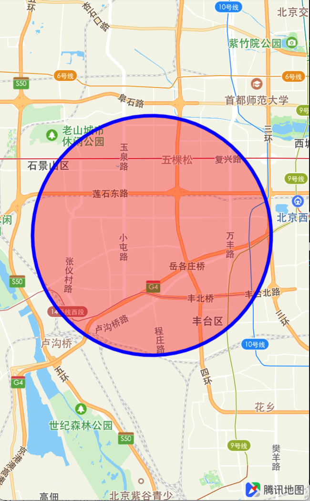

圆
绘制圆
圆形是由Circle类定义的封闭曲线，添加多边形的步骤如下，修改setupMapView函数中的代码：
- (void)setupMapView
{
self.mapView = [[QMapView alloc] initWithFrame:self.view.bounds];
self.mapView.delegate = self;
[self.view addSubview:self.mapView];
[self.mapView setCenterCoordinate:CLLocationCoordinate2DMake(39.920269,116.390533)];
[self.mapView setZoomLevel:10];
// 构造圆形，半径单位m
QCircle *circle = [QCircle circleWithCenterCoordinate:CLLocationCoordinate2DMake(39.8842, 116.264) radius:4000];
// 添加圆形
[self.mapView addOverlay:circle];
}
继续实现协议中的mapView: viewForOverlay:回调函数，设置折线属性以显示在地图上，具体代码如下：
- (QOverlayView *) mapView:(QMapView *)mapView viewForOverlay:(id<QOverlay>)overlay
{
if ([overlay isKindOfClass:[QPolyline class]]) {
QCircleView *circleView = [[QCircleView alloc] initWithCircle:overlay];
// 设置描边宽度
[circleRender setLineWidth:3f];
// 设置描边色为黑色
[circleView setStrokeColor:[UIColor blueColor]];
// 设置填充色为红色
[circleView setFillColor:[UIColor colorWithRed:1 green:0 blue:0 alpha:.3]];
return circleView;
}
return nil;
}
运行程序，效果如下：
